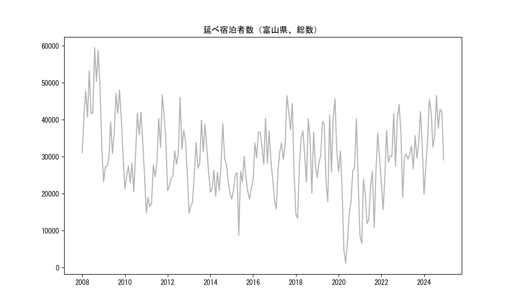
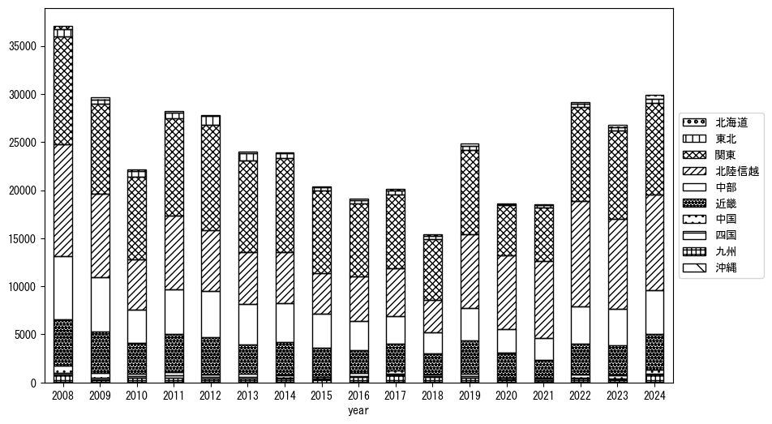
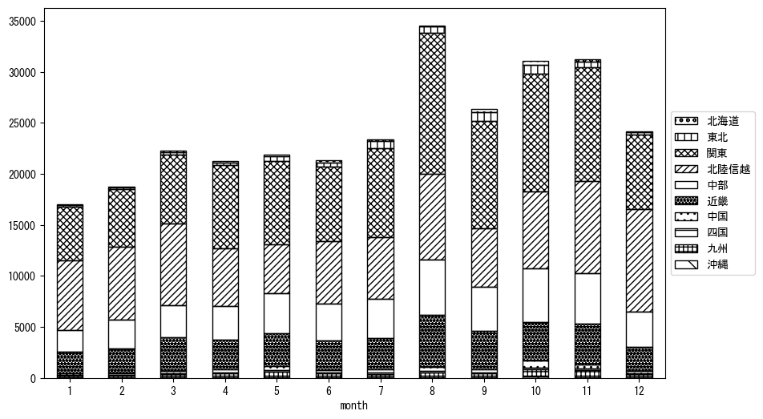
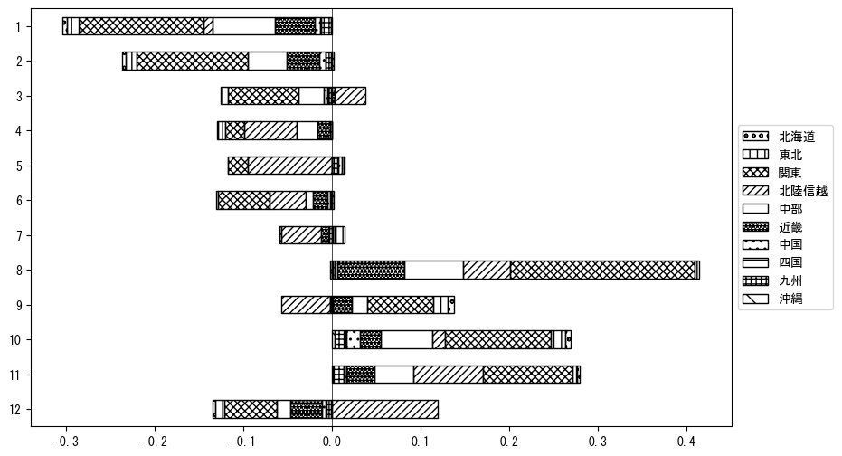

-
トップ
-
富山県
富山県
１．延べ宿泊者（総数）の推移
時系列グラフ

図１：富山県内の従業員数100人以上の宿泊施設での延べ宿泊者数（国外、居住地不詳を含む総数）。
基本統計量
表１：従業員数100人以上の宿泊施設での延べ宿泊者の総数（国外、および居住地不詳を含む）に関する基本統計量。単位は人泊。平均は１か月あたりの平均値を表す。図１に対応。
| 2008年 |
45,625 |
9,123 |
31,088 (1月) |
59,482 (8月) |
| 2009年 |
35,063 |
8,156 |
23,259 (1月) |
48,042 (10月) |
| 2010年 |
29,534 |
7,425 |
20,444 (6月) |
41,994 (10月) |
| 2011年 |
28,607 |
10,621 |
14,830 (1月) |
46,753 (10月) |
| 2012年 |
29,791 |
7,175 |
20,811 (1月) |
46,055 (8月) |
| 2013年 |
27,601 |
8,204 |
14,731 (1月) |
39,881 (8月) |
| 2014年 |
25,146 |
5,590 |
19,305 (4月) |
38,971 (8月) |
| 2015年 |
21,931 |
5,341 |
8,723 (5月) |
30,123 (8月) |
| 2016年 |
31,610 |
5,414 |
23,679 (1月) |
40,395 (8月) |
| 2017年 |
32,010 |
9,685 |
15,862 (2月) |
46,486 (8月) |
| 2018年 |
28,353 |
8,977 |
13,387 (2月) |
40,292 (8月) |
| 2019年 |
32,211 |
8,765 |
17,863 (7月) |
45,656 (11月) |
| 2020年 |
20,137 |
11,600 |
1,135 (5月) |
40,272 (11月) |
| 2021年 |
19,583 |
9,412 |
6,511 (2月) |
36,376 (11月) |
| 2022年 |
31,540 |
8,588 |
15,628 (2月) |
44,106 (11月) |
| 2023年 |
31,132 |
5,489 |
19,011 (1月) |
42,204 (11月) |
２．宿泊者数の重心（年平均の推移）
図２：富山県内の従業員数100人以上の宿泊施設での延べ宿泊者数（国外、居住地不詳を除く）の重心（年平均の推移）。
全画面表示
重心の前年平均からの移動距離と方位、および緯度・経度
表２：重心の前年平均からの移動距離と方位、および緯度・経度。図２に対応。
| 2008年 |
— |
— |
35.8742 |
137.5978 |
| 2009年 |
東 |
8.5km |
35.8598 |
137.6903 |
| 2010年 |
東南東 |
16.6km |
35.7811 |
137.8461 |
| 2011年 |
北西 |
9.0km |
35.8285 |
137.7650 |
| 2012年 |
東南東 |
14.6km |
35.7908 |
137.9203 |
| 2013年 |
西 |
3.5km |
35.7941 |
137.8819 |
| 2014年 |
南 |
5.0km |
35.7493 |
137.8910 |
| 2015年 |
南南東 |
4.0km |
35.7142 |
137.9008 |
| 2016年 |
北西 |
10.3km |
35.7821 |
137.8235 |
| 2017年 |
西 |
15.6km |
35.7615 |
137.6529 |
| 2018年 |
東北東 |
10.8km |
35.7807 |
137.7699 |
| 2019年 |
北 |
13.0km |
35.8972 |
137.7531 |
| 2020年 |
西北西 |
15.5km |
35.9397 |
137.5900 |
| 2021年 |
北東 |
14.0km |
36.0240 |
137.7061 |
| 2022年 |
南東 |
5.7km |
35.9837 |
137.7461 |
| 2023年 |
東 |
6.0km |
35.9781 |
137.8123 |
運輸局別延べ宿泊者数
時系列（年平均）

図３：富山県内の従業員数100人以上の宿泊施設での１か月あたり平均延べ宿泊者数（国外、居住地不詳を除く）の運輸局別内訳。
寄与度（前年からの変化率に対する）
 図４：富山県内の従業員数100人以上の宿泊施設での運輸局別延べ宿泊者数（国外、居住地不詳を除く）から求めた寄与度。
図４：富山県内の従業員数100人以上の宿泊施設での運輸局別延べ宿泊者数（国外、居住地不詳を除く）から求めた寄与度。
３．宿泊者数の重心（月別）
図５：富山県内の従業員数100人以上の宿泊施設での延べ宿泊者数（国外、居住地不詳を除く）の重心（月別）。観測期間は2008年1月から2023年12月まで。
全画面表示
全期間（2008年1月～2023年12月）の平均と月別平均の比較
表３：全期間の平均から月別平均までの移動距離と方位、および緯度・経度。図５に対応。
| 全期間 |
— |
— |
35.8462 |
137.7717 |
| 1月 |
北西 |
12.8km |
35.9305 |
137.6741 |
| 2月 |
西北西 |
13.5km |
35.9015 |
137.6386 |
| 3月 |
西北西 |
12.1km |
35.8832 |
137.6454 |
| 4月 |
南東 |
7.6km |
35.7912 |
137.8218 |
| 5月 |
南南西 |
14.1km |
35.7256 |
137.7219 |
| 6月 |
北西 |
1.7km |
35.8558 |
137.7571 |
| 7月 |
東 |
7.0km |
35.8350 |
137.8482 |
| 8月 |
東南東 |
13.0km |
35.7849 |
137.8941 |
| 9月 |
東 |
17.3km |
35.8405 |
137.9628 |
| 10月 |
南東 |
7.0km |
35.8112 |
137.8359 |
| 11月 |
東南東 |
0.5km |
35.8446 |
137.7765 |
| 12月 |
北西 |
14.0km |
35.9504 |
137.6842 |
運輸局別延べ宿泊者数
月別平均（2008年1月～2023年12月）

図６：富山県内の従業員数100人以上の宿泊施設での延べ宿泊者数（国外、居住地不詳を除く）の運輸局別内訳（月別）。
寄与度（全期間の平均から月別平均への変化率に対する）

図７：富山県内の従業員数100人以上の宿泊施設での運輸局別延べ宿泊者数（国外、居住地不詳を除く）から求めた寄与度（月別）。
４．データのダウンロード
出典：観光庁「宿泊旅行統計調査」に収録された「施設所在地、居住地別延べ宿泊者数（従業員数100人以上の施設）」
国土地理院「白地図（地理院タイル）」（図２と図５）